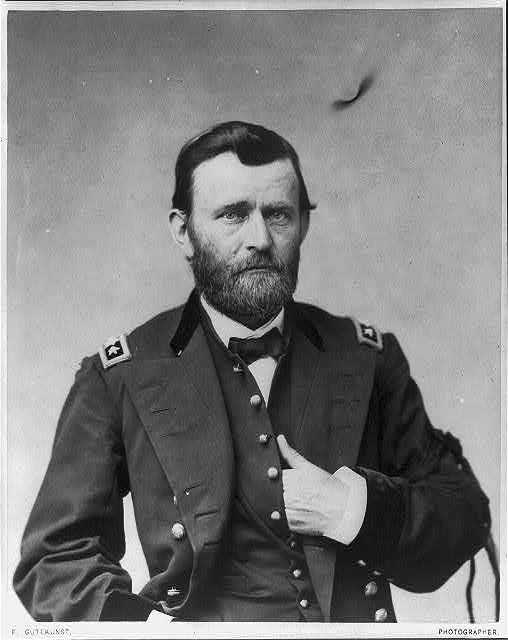

General Grant
Sample text 1
Sample text 2
Sample text 3
- Running: We start with the basics to help you run faster and farther than you ever thought possible without aches and pains.
- Cycling: The indoor bike trainers at TSS include everything you need to refine your technique, stamina, and power for improved results on the road.
- Swimming: The open water swim can be one of the most frightening sports to master. Our classes begin with basic techniques so that your swim can be very enjoyable, and not a chore.
Contact us to set up individual instruction and assessment.
Our Philosophy
Athletes are the foundation of every successful training program. The best coach is an experienced guide who begins with each athlete's hopes, dreams and desires and then tailors a training plan based on that individuals’s current fitness and lifestyle. Since 2002, TSS has helped hundreds of individuals achieve success in many fitness areas. The winner is not the one who finishes first but anyone who starts the race and perseveres. Join us and begin exploring the possible.